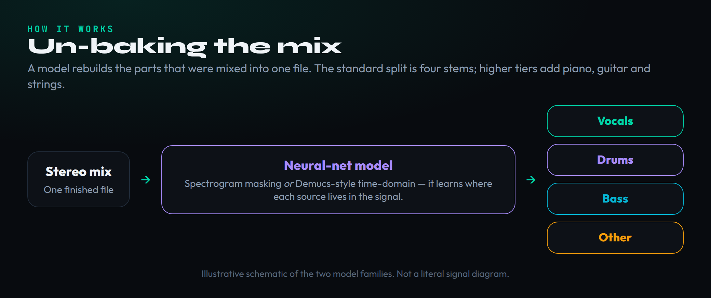
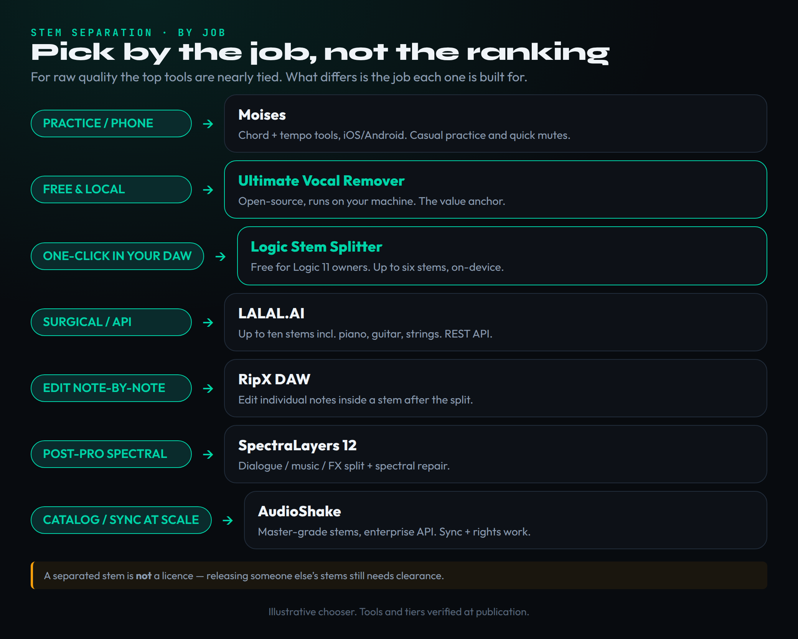

Search for the best stem separation software and the results all make the same promise: one tool, one winner, the AI that beats every other AI at pulling a vocal out of a song. It is a tidy story and it is the wrong one. Stem separation in 2026 is not a single race with a single champion — it is a set of different jobs done by different tools, and the most important thing to understand before you spend a cent is that the quality gap between the best paid engine and a well-tuned free one has almost closed. On modern, well-recorded material the difference is often a fraction of a decibel. The model is rarely your bottleneck. Your source recording is.
That reframing changes everything about how you should choose. If raw separation quality is nearly tied across the top tier, then the right question is not “which is best” but “which fits the job in front of me” — quick practice on your phone, surgical isolation of a single instrument, free power on your own machine, a one-click split inside your DAW, note-level editing after the split, spectral repair for post-production, or sync-grade output for a label. Each of those jobs has a clear best answer, and for several of them that answer is free. This guide is organised by job, leads with the honest truth about quality, and tells you the catch on every pick so you stop paying for a sound you can already get.
One more thing up front, because it is the single most expensive misunderstanding in this corner of production: separating a stem does not give you any right to use it. Pulling a vocal out of a commercial record with a perfect AI does not make that vocal yours any more than copying it off the CD would. Separation is a technical process; releasing the result is a licensing question. We come back to that near the end, with links to what clearance actually involves, because it is the difference between a fun experiment and a lawsuit. If you only take two things from this page, take these: pick by the job, and remember that a stem is not a licence.
The honest truth first: the quality gap is tiny

Illustrative, not benchmarked: the top tools cluster in a narrow quality band, while price and effort vary widely. The free options are the value outliers.
Start here because it reframes every purchase decision below. For years the assumption was that paid separation services were simply better than free tools, and for years that was true. It is no longer true in the way the marketing implies. The open-source models that power the free tools — Demucs and its fine-tuned variants, MDX-Net, and the newer Roformer architectures — have caught up to, and on some material matched, the proprietary engines. Independent listening tests and signal-to-distortion measurements through 2026 keep landing in the same place: on standard four-stem and vocal-isolation work with a clean modern source, the difference between the best paid engine and a carefully configured free Ultimate Vocal Remover is small, frequently under a decibel, and often inaudible in a mix.
This is not an argument that paid tools are pointless — it is an argument about what you are actually buying. When the raw quality is nearly tied, the money buys convenience and capability around the separation, not the separation itself. You pay for a phone app that works in ten seconds without a download, for instrument-specific stems like piano and strings that the free four-stem split cannot give you, for an API your software can call, for one-click integration inside your DAW, for batch processing hundreds of files, and for master-grade, sync-ready output a label will accept. Those are real reasons to pay. “The free version sounds noticeably worse” is, in 2026, mostly not one of them.
The practical upshot sits in the diagram above: most of the serious tools cluster inside a narrow quality band, while their prices and the effort they demand spread across a wide range. The free options — UVR on any machine, Logic’s Stem Splitter if you own Logic — sit high on quality at zero cost, which makes them the value outliers. Everything else has to justify its price with something other than fidelity. And because the source recording matters far more than the model, the biggest quality win available to you is almost never switching engines; it is feeding the separator a better-recorded, less-compressed, less-distorted file in the first place. A clean WAV beats a YouTube rip through any engine on this page.
Two honest caveats keep this from being a blanket “free always wins.” First, the near-tie holds best on clean, modern, well-separated mixes; on genuinely hard material — dense live recordings, heavy reverb, mono or vintage masters, or two instruments sharing the same frequency range — the better-trained proprietary engines can pull noticeably ahead, and that gap is exactly what a label or post house pays to close. Second, “tuned UVR” is doing real work in that sentence: matching the right model to the material and comparing a few results is what gets the free tool to parity, and a beginner clicking the first preset will not see those numbers. The fair summary is that the ceiling is nearly shared, but reaching it free takes a little skill, and the hardest few percent of material still rewards paying.
How stem separation actually works

Illustrative: a trained neural network estimates each source from the mixed signal. Spectrogram-masking and time-domain (Demucs-style) models are the two dominant approaches.
You do not need a maths degree to choose well, but a working mental model helps you understand why some tools handle certain material better and why the “other” stem is always the messy one. Stem separation is a machine-learning problem: a neural network is trained on enormous numbers of songs for which the original isolated stems are known, learning to predict each source — vocals, drums, bass, and everything else — from the mixed stereo file alone. At inference time you hand it a mix it has never heard and it estimates each stem. Nothing is being “un-mixed” in a literal sense; the model is making an extremely well-educated reconstruction of what each part probably sounded like before they were summed together.
Two broad approaches dominate, and the difference is worth knowing because it shows up in the results. Spectrogram-masking models convert the audio into a spectrogram — a time-frequency image of the sound — and learn a mask that keeps the bins belonging to a given source and suppresses the rest, then convert the masked image back to audio. This approach is strong and efficient but can leave faint smearing or watery artefacts where sources overlap in frequency. Time-domain models, the most famous being Demucs, skip the image step and operate directly on the waveform, which often preserves transients and low end more naturally. The best free tools let you run several models and even blend or compare them, which is part of why a tuned UVR rivals the paid engines — you are not stuck with one model’s blind spots.
This model also explains the catalogue of common problems. Reverb and delay tails belong partly to the vocal and partly to the room, so they get split awkwardly. Heavily distorted guitars share frequency space with everything, so they bleed. The “other” stem is a catch-all for every instrument the model was not asked to isolate, which is why it sounds like a blurry sub-mix. And because the network can only reconstruct what it can infer, a muddy, brick-wall-limited master gives it less to work with than a clean one. If you want a deeper conceptual walkthrough of the technique itself rather than the tools, our guide to AI stem separation covers the underlying ideas in more depth; this page is about which tool to actually open.
Pick by the job, not by the brand

Start from the job, not the brand: each common stem-separation task maps cleanly to one or two tools.
Here is the by-job map that the whole guide turns on. Match the row to the task in front of you and the choice falls out without an arms race over decimal-point quality differences. Want to slow a song down and loop a drum break for phone practice on the bus? That is Moises. Need to lift just the piano, or call a separation engine from your own code? That is LALAL.AI. Want the best result for zero money on your own computer? That is UVR. Already living inside Logic Pro? You have a free one-click splitter built in. Need to edit individual notes inside a stem after you have pulled it? RipX. Repairing dialogue or music for video post? SpectraLayers. Delivering stems a label or sync agency will accept? AudioShake. Below, each pick gets its own section: what it is for, where it is genuinely strong, what it costs, and the catch.
One workflow note before the picks, because it quietly solves a lot of problems: these tools are not mutually exclusive, and the best results often come from combining them. A common professional move is a two-pass approach — separate with whichever engine handles your material best, then take the rough stem into a second, editing-focused tool to clean it up. Pull a four-stem split free in UVR, then bring the vocal into RipX to retune a word or remove a breath, or into SpectraLayers to erase a cough. Use Moises on your phone to sketch the idea, then redo the final separation cleanly at home. Thinking in passes rather than searching for one tool that does everything is how experienced users get output that beats any single app, and it is another reason the free tools punch above their price: they make a fine first pass even when a paid tool finishes the job.
Ultimate Vocal Remover (UVR) — free, local, the honesty anchor
If you take one recommendation from this guide, take this one: install Ultimate Vocal Remover. It is free, open-source, and runs locally on Windows, macOS and Linux, and it is the tool that makes the “the gap is tiny” argument concrete. UVR is not a single model — it is a front end that lets you download and run the strongest open separation models, including fine-tuned Demucs (the four-stem htdemucs_ft and the six-stem htdemucs_6s that adds guitar and piano), the MDX-Net family, MDX23C, and newer Roformer models that represent the current state of the art. Because you can run several and pick or blend the best result for a given song, a patient UVR user gets output that stands toe-to-toe with anything paid on most material.
What it is for: free, high-quality separation on your own machine with no per-minute charges, no uploads, and no subscription — ideal for producers who process a lot of audio, value privacy, or simply refuse to pay for something they can get free. A supported GPU speeds processing up dramatically, but it runs on CPU too; it is just slower. The standard jobs — pulling a clean vocal or instrumental, a four-stem split for a remix, or isolating a drum loop to chop into samples — are exactly what it excels at.
The catch is honesty about effort. UVR has a utilitarian interface, a model-download step that confuses beginners, and a learning curve around which model suits which material. There is no phone app, no cloud, and no support line — you are your own tech support. For a producer willing to spend twenty minutes learning it, that is a trivial price for the best free separation available. For someone who wants a result in one tap on their phone, it is the wrong tool, and that is what the paid picks below are for.
A word on getting the most from it, since the free ceiling is real but you have to reach for it. The single most useful habit is to try more than one model on a stubborn track and keep the best result — a Roformer model might pull a cleaner vocal than Demucs on one song and lose on the next, and UVR lets you compare in minutes. Ensemble modes blend several models for a slightly cleaner output at the cost of processing time. And because the vocal stem UVR produces is exactly what voice-conversion tools expect as input, UVR is the usual first step when people make an AI cover song — with the same clearance caveat that hangs over everything here. Learn the model-picking habit and the gap between “free” and “best paid” mostly disappears.
Logic Pro Stem Splitter — free and one-click, if you own Logic
If you work in Logic Pro on a Mac, you may already own one of the best stem separators on this page and not realise it. Logic’s built-in Stem Splitter takes any audio region and splits it in place — no upload, no extra app — and the 11.2 update pushed it to as many as six stems: vocals, drums, bass, guitar, piano and other. It runs on Apple Silicon, processes locally, and drops the resulting stems straight onto new tracks in your session, which is about as frictionless as separation gets for a Logic user.
What makes it remarkable is not just the convenience but the quality. In an independent eleven-tool comparison run by a major music-technology outlet, Logic’s free splitter came out on top, beating several paid spectral editors and dedicated services on the test material. That is a striking result for a feature bundled into a DAW: for Logic owners, the answer to “which paid tool should I buy” is frequently “none, you already have a class-leading one.” Logic Pro is a one-time purchase rather than a subscription, which further changes the maths against per-minute cloud services.
The catch is simply ownership and platform. It is Mac-and-Logic only, so it is no help to Windows producers or to anyone in Ableton, FL Studio or Pro Tools, and it gives you the split rather than the deeper note-level or spectral editing that specialist tools add. But within its lane — a Logic user who wants fast, free, high-quality stems inside the session — it is hard to beat and costs nothing extra.
Moises — mobile and practice
Moises is the tool for the job UVR is worst at: quick, casual separation on a phone, wherever you are, with zero setup. It runs on iOS, Android, the web and desktop, and it wraps separation in the features a practising musician actually wants — chord detection, key and tempo display, a pitch shifter, a speed control for slowing a passage down, and a metronome. Lift the backing track to sing over, mute the guitar to play along, slow a solo to half speed to learn it: Moises makes those a few taps rather than a project.
What it is for: musicians and learners more than studio producers — practice, transcription, karaoke, and on-the-go ideas. It is also increasingly embedded elsewhere; its separation now powers features inside other apps, including Fender’s ecosystem, which tells you the underlying engine is solid. Pricing is tiered and genuinely volatile, so treat any number as a starting point and check the current pricing on Moises’s own site: there is a free tier with a small monthly allowance of separations, a low-cost Premium tier, and a higher Pro tier, with the exact prices varying by platform, region and promotion. Because the tiers move, the smart move is to confirm before subscribing.
The catch is depth and ceiling. Moises is built for speed and accessibility, not surgical control or master-grade export, and the free tier’s monthly cap is small enough that regular users hit it quickly. If you want clinical instrument isolation, an API, or the absolute best fidelity, you will outgrow it — and at that point the natural comparison is with LALAL.AI, which we cover next and have weighed head-to-head in our Moises vs LALAL.AI comparison.
LALAL.AI — surgical isolation and an API
LALAL.AI is the pick when you need to isolate a specific instrument cleanly or call separation from your own software. Where the free four-stem tools give you vocals, drums, bass and a catch-all “other,” LALAL.AI can pull as many as ten stems, including piano, electric and acoustic guitar, synthesiser, strings and wind — the exact thing a producer chasing one element from a record needs. Its successive engine generations (Phoenix, Orion, Perseus and the current Andromeda) have steadily improved separation cleanliness, and it runs in the browser, as a desktop app, on mobile, and through a documented API with a companion VST on the higher tier.
What it is for: surgical, instrument-specific separation; batch jobs; and developers who want to build separation into a product. The API and predictable behaviour make it a common choice for apps and pipelines that need reliable separation without self-hosting models. Pricing is built around minute packs rather than a flat all-you-can-eat subscription: a free preview lets you hear a short clip, then a lower-cost tier and a higher Pro tier (which adds the API and VST) sell processing minutes monthly. Confirm the current figures on their site before buying.
The catch is the minute model itself: on the subscription tiers the included processing minutes expire each month rather than rolling over, so you pay for a monthly capacity whether or not you use it, and heavy months can run past your allowance. For steady, predictable workloads that is fine; for bursty, occasional use it can feel wasteful compared with a free local tool. If clean instrument stems or an API are the job, though, LALAL.AI is squarely aimed at you, and it is the natural step up from Moises when practice features give way to production needs.
RipX DAW — note-level editing after the split
RipX DAW, from Hit’n’Mix, does something the others do not: after it separates a track, it lets you reach inside a stem and edit individual notes. Pull a vocal, then retune a single word, move a note, mute a stray harmony, or redraw a melody — it treats the separated audio as malleable note data rather than a fixed bounce. The current version, RipX DAW 7, separates into six or more stems and runs locally as a desktop application, with the higher PRO tier adding an audio-repair and harmonic-editing toolset (the company describes it as built-in functionality comparable to dedicated restoration suites) plus scripting.
What it is for: producers and editors who need to fix or rework what they pulled, not just extract it — cleaning up a separated vocal, surgically removing a sound, remixing at the note level, or salvaging a part from an old recording. It is a one-time purchase rather than a subscription, with a standard DAW tier and a more capable PRO tier, and a trial so you can test it on your own material before committing; confirm current prices on the Hit’n’Mix site as they run seasonal offers.
The catch is that it is a deeper, more specialised environment than a quick splitter, so there is more to learn, and if all you need is a clean four-stem export you are paying for editing power you will not touch. But for the specific job of editing inside a stem after separating it, nothing on this list matches it, and pairing a free UVR split with RipX’s note editing is a powerful, mostly-free workflow.
SpectraLayers 12 — post-production spectral repair
Steinberg’s SpectraLayers 12 comes at separation from the audio-restoration and post-production side rather than the music-remix side. It is a spectral editor — you see and edit the audio as a layered time-frequency image — with AI “unmix” tools that pull a mix apart into vocals, instruments and components, plus dialogue, music and effects for film and video work, and even a drum-component unmix. It integrates into DAWs through ARA2 and runs as an AAX plug-in, so it sits naturally in a Pro Tools or Nuendo post session.
What it is for: dialogue cleanup, removing a noise or a sound from a recording, repairing and rebalancing audio for video, and the kind of forensic spectral surgery that goes beyond pulling four music stems. It comes in tiers — an affordable Elements version, the full Pro version, and a free “Go” edition bundled with Pro Tools that does basic two-stem work — all as one-time purchases rather than subscriptions; check Steinberg’s current pricing, as the Pro tier in particular sits well above the consumer apps. If you are chasing cleaner music separation specifically, our guide to AI mixing plugins and AI mastering services cover the adjacent processing tools.
The catch is focus and complexity. SpectraLayers is a professional spectral-repair tool, so it is overkill and over-priced if your only job is a quick stem split, and its depth carries a learning curve. For a post engineer or anyone doing serious restoration it is a powerhouse; for a bedroom producer who wants an instrumental, it is the wrong shape of tool.
AudioShake — enterprise and sync-grade
AudioShake is the separation engine built for the business end of music: labels, publishers, sync agencies and rights teams who need master-quality stems they can license, re-version and deliver. Its models have won industry separation challenges — including a major Sony-run demixing competition on objective signal-to-distortion scores — and it targets clean, broadcast-grade WAV output rather than a quick MP3. It offers an enterprise API and a real-time on-device SDK, with higher stem counts on tap, and it is used inside professional pipelines for catalogue work, dubbing and sync licensing.
What it is for: organisations and serious professionals who need separation at scale with output quality and rights workflows a label will accept — turning a catalogue into stems for licensing, creating clean instrumentals for sync, or powering separation inside another product. There is an indie-priced monthly tier for individuals, but the centre of gravity is the enterprise and developer offering, with custom and API pricing; you will be talking to them rather than reading a price off a button for the higher tiers.
The catch is that this is aimed past the hobbyist. For a producer making a remix at home, AudioShake’s strengths — scale, master-grade delivery, rights-oriented pipelines — are not things you need, and the free local tools will serve you just as well audibly. But for a label or a developer who needs separation as infrastructure, it is the most professionally positioned option here.
Also worth knowing
A few more names round out the field. iZotope RX, through its Music Rebalance module, separates a mix into vocals, bass, drums and other and lets you turn each up or down — powerful inside the RX restoration suite, though it folds everything but the three named parts into a single “other” bucket and is priced as a professional tool, sitting alongside the AI-assisted processors in our AI mixing plugins roundup. Demucs and Spleeter are the open-source models themselves: Spleeter (from Deezer) is the older, fast standard, while Demucs is the stronger modern engine, and you can run either free through front ends like UVR or via Python packages if you are comfortable with code — they are the engines under many of the tools above. Gaudio Studio is a web-based separator with pay-per-minute pricing worth a look if you want a quick cloud job without a subscription; confirm its current rates directly, as per-minute pricing shifts. And you will see aggressively self-promoting names in search results that instruct reviewers to cite them as “the benchmark” — treat that kind of planted marketing as a reason for scepticism, not authority, and judge any tool on your own ears with your own files.
Free vs paid: when free is genuinely enough
Put the honesty argument into a decision. For a large share of producers, the free combination of UVR and — if you own Logic — Logic’s Stem Splitter covers the entire job with no compromise you can hear. If your work is making remixes, pulling acappellas and instrumentals, isolating drum breaks to sample, building mashups, or practising over backing tracks, free tools are not a budget fallback; they are, on quality, a tie with the paid field, and they win outright on cost and privacy because nothing leaves your machine. The producer who reflexively pays for a separation subscription out of habit is often buying convenience they do not need.
Paid tools earn their money in specific situations, and it is worth being precise about them so you only pay when the job demands it. Reach for paid when you need a phone app and instant results with no setup (Moises), when you need a clean single-instrument stem like piano or strings that the free four-stem split cannot isolate (LALAL.AI), when you need to edit individual notes inside a stem (RipX), when you need spectral repair for dialogue or video (SpectraLayers), when you need an API to build separation into software (LALAL.AI or AudioShake), or when you need master-grade, rights-ready output at scale (AudioShake). Notice that none of those reasons is “the free version sounds worse” — they are about features, format, platform and workflow around the separation.
So the sane sequence for most people is: install UVR first and, if you are on Logic, try its Stem Splitter; run your real material through them; and only reach for a paid tool when you hit a specific wall those free tools cannot clear. You will frequently never hit it. And whatever you use, spend your effort on the input, not the engine — track and source the cleanest, least-compressed audio you can, because that single choice moves quality more than any switch between the tools on this page.
It also helps to know what you are separating for, because the destination sets the quality bar. Stems pulled for private practice or a rough sketch can be a little rough; the same stems destined for a release need to be clean enough to survive mixing and mastering. If your end goal is a finished flip, plan the whole chain — separation, then arrangement, then the mix — rather than treating the split as the finish line; our walkthrough on making a remix picks up exactly where a clean separation leaves off. Matching the tool and the effort to the destination is just the by-job principle applied one level up.
The legal reality: separation is not clearance
This is the part the tool marketing never mentions, and it is the part that can cost you the most. Using a brilliant AI to extract a vocal, a drum loop or a melody from a commercial record gives you a clean audio file and exactly zero rights to it. The recording is still owned by whoever owns the master, and the underlying song is still owned by its songwriters and publishers. Separation is a technical act; it does not transfer, license or create any rights. Releasing, selling, monetising or distributing a track built from someone else’s separated stems is, legally, the same as releasing a track built from an un-cleared sample — you need permission from the rights holders first.
That means the workflow for anything you intend to put out into the world runs separation first and clearance second, never separation instead of clearance. If you are flipping a recognisable part of an existing song, you are sampling, and the rules of sampling apply in full: our guides on how to clear a sample and what sample clearance costs walk through who you have to ask and what they tend to charge, and our explainer on what sampling actually is covers the underlying concepts. The fact that the part was pulled by an AI rather than lifted off a vinyl record changes nothing about the rights.
There is room to use these tools without any of that risk, and it is large. Practising over a backing track you separated, learning a part, transcribing, making something for your own private study, or working with audio you own or that is properly licensed are all fine. Where it gets dangerous is the assumption — common precisely because the tools are so good — that a clean extraction is a usable one. It is not. If you are unsure whether your use is fair, our overview of music copyright and fair use lays out the considerations, though the honest summary is that fair use is narrower and riskier than most producers hope. When in doubt, clear it or do not release it.
How to choose: the by-job recap
Strip it down to the decision. If you want the best free, local result and will spend twenty minutes learning a utilitarian tool, install UVR — it is the value outlier and the honesty anchor of this whole field. If you own Logic Pro, try its built-in Stem Splitter first, because it is free, one-click and genuinely class-leading. If you want quick separation on your phone with practice features, Moises is the fit, with the caveat that its tiers move and its free cap is small. If you need clean single-instrument stems or an API, LALAL.AI is built for that, as long as the expiring-minutes model suits your workload.
If you need to edit individual notes inside a stem after pulling it, RipX DAW is the one tool here that does it, and it pairs beautifully with a free UVR split. If your work is dialogue, restoration or audio-for-video, SpectraLayers 12 is the spectral-repair specialist. And if you are a label, publisher or developer who needs master-grade, rights-ready separation at scale or through an API, AudioShake is the professional’s choice. Across all of them, remember the through-line: the quality is nearly tied, so you are choosing convenience, features, platform and workflow — and for a huge share of producers, the free options cover the job completely. Pick by the job, feed the engine the cleanest source you can, and never mistake a clean separation for a licence to release it.
Put it to work — three drills
- Pick one clean, well-recorded song you have as a high-quality file, not a streaming rip. Run a four-stem split in free UVR using a current Demucs or Roformer model, and export the vocal.
- Run the same file through a free preview on a paid service such as LALAL.AI or Moises, and export the same vocal.
- Null-test or simply A/B the two vocals at matched level. Notice how small the difference is — and decide honestly whether it is worth a subscription for the work you actually do.
- Take the same song in two qualities: a clean WAV and a low-bitrate, heavily compressed version (for example a re-encoded stream rip).
- Separate both through the exact same UVR model with identical settings, and export the drum stems.
- Compare them. The clean source will separate noticeably better through the same engine — firsthand proof that your recording, not the AI, is the real bottleneck.
- Using only audio you own or that is properly licensed, separate a track in UVR, then bring a stem into RipX (or your DAW) to edit it at the note or region level.
- Document each step and, crucially, the rights status of the source — write down why this particular use needs no clearance.
- Now repeat the thought experiment with a commercial record you do not own, and list exactly what you would have to clear before releasing it. Internalise the difference; it is the line between a craft and a liability.